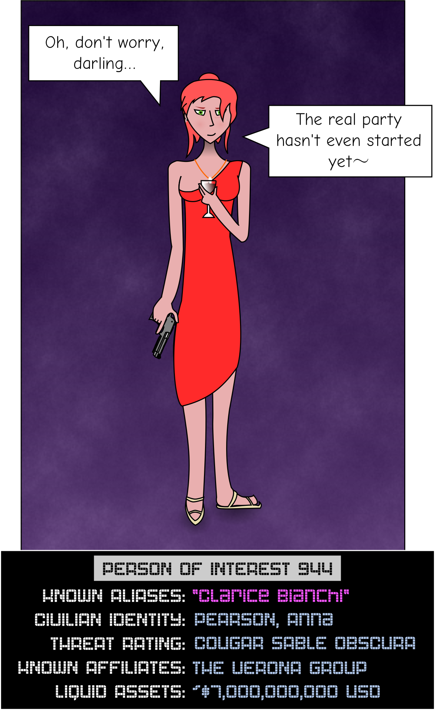

FILE REQUEST
| FILE IDENTIFIER | F02.944 |
|---|---|
| FILE TITLE | "Person of Interest 944 (BIANCHI, Clarice)" |
| SECURITY CLASS | TSUNAMI HERON |
| USER IDENTITY | U-23719 |
|---|---|
| USER CLEARANCE | LONDON LILAC |
| ACCESS LOCATION | SUBSTATION 53 :: TERMINAL 76 |
| USER CODEWORD CLEARANCES | |
| * SOLEMN CANDLE | * EMPTY HEARTH |
| * MYSTIC PINES | * FORGOTTEN VIGIL |
| * SORROWFUL CURRENT | |
< < REQUEST SENT > >
- This request has been logged for security purposes. Be advised that any network traffic may be selected at random for audit by the Clearance Review Board.
< < ACCESS GRANTED > >
- Displaying file
Person of Interest 944 (BIANCHI, Clarice)
Overview
Person of Interest 626 ("Clarice Bianchi") is a highly-trained operative who has amassed substantial wealth and connections. She is the suspected leader of Group of Interest 17, an organization based out of Venezuela which is involved in human trafficking, weapons smuggling, and international espionage. Bianchi and GoI 17 are both considered hostile.
Born Anna Pearson, Bianchi is the illegitimate child of an American drug dealer and an Italian covert operations agent. Bianchi was unknown to her sister and raised largely by her father, who trained her in tradecraft. Bianchi's sister, FBI Special Agent Jane Pearson, is currently away without leave attempting to track down and capture her, and is currently being evaluated for recruitment. It is unclear whether Agent Pearson is now aware of Bianchi's true identity.
Recent intelligence suggests that PoI 626 has allied herself and her organization with GoI 4 ("The Verona Group"). The ramifications of this move remain unclear at this time.
Threat analysis
Bianchi is an extremely capable combatant, skilled in both armed and unarmed combat. Capture should not be attempted without use of overwhelming force. She should be considered armed and extremely dangerous at all times. Bianchi is not currently known or suspected to be capable of outside-context combat.
Additionally, Bianchi rarely appears in public without a covert group of loyal bodyguards. Care should be taken to identify and neutralize these bodyguards before any attempt is made to secure Bianchi herself.
The full extent of her connections is unknown, as Bianchi conceals her presence in global politics with great care, acting under aliases and through figurehead politicians. Until her OBSCURA classification can be revoked, a full and accurate threat analysis is not possible. The Department should therefore prioritize investigation of Bianchi's organization and, in the meantime, be prepared for the worst, up to and including infiltration of the Committee.
It is, however, known that her organization is capable of fielding ground troops, air support, and [CL: TSUNAMI QUEENFISHER]. Alienating her from her power base and ensuring a coup in her absence may be critical to avoiding all-out war with GoI 17.
Psychological profile
Bianchi is charismatic and personable, but unafraid to sacrifice any asset needed to expand her own power. Whether her personal warmth is genuine or a front to secure the cooperation of others is unclear. However, she is highly involved in the careers and lives of her subordinates, and engenders trust easily.
Bianchi takes great care to always be in control of any situation she enters, and has shown remarkable ability to remain calm under pressure. It is not currently known how she would react to a situation that escaped her control, and this is currently seen as a potential means to undermine her authority in the eyes of her subordinates.
Her charm is not grounded in her calm, however. Bianchi seems to inspire not through vision and clarity of purpose, but through passion and promises of adventure. Those of her personnel successfully secured and interviewed describe her as "intoxicating," as offering them a world filled with excitement where they personally can matter.
The underlying motivations for Bianchi's activity on the international stage are not easy to discern. She does not seem to bear ill will towards the family that excluded her, and has been observed to keep up an active correspondence with her mother. This seems to rule out anger as a motivation. Her ambivalence toward luxury would seem to rule out wealth. Her calm and charisma would seem to rule out personal insecurity.
The working hypothesis of Department psychologists is thus that Clarice Bianchi is motivated by the acquisition of power as an end in itself. This assumption is supported by the glee Bianchi often shows when wielding power, and her consistent preference for spectacle over practicality.